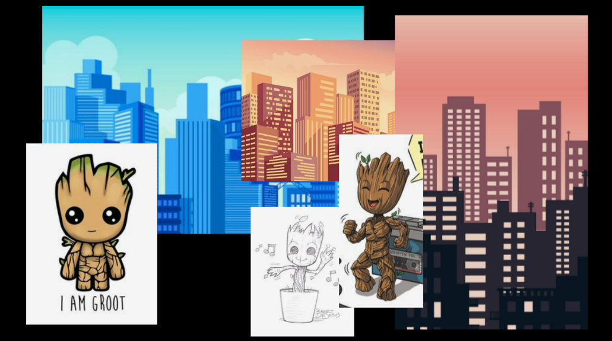
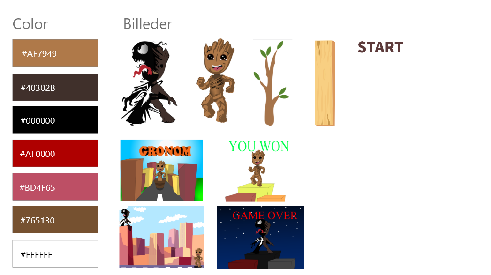

Animation
Animation, vi skulle i dette forløb lave vores eget spil som skulle kunne styres med mussen. Jeg valgte at lave spillet GRONOM, som er en blanding af Groot og Venom. Til at starte med var det meningen at spillet skulle kunne styres med W, A, S, D og Space. Men fordi vi lige var startet i Javascript ville det ikke kunne lade sig gøre på den tid vi har haft.
Spillet var til at starte med meningen at Venom skulle kunne skyde hans små sorte slim klatter mod en, imens man skulle undgå dem skulle men rede en person fra en af de bygninger personen nu var landet i, men sman undgik Venom's skyd. Man ville kunne opnå hårdere slag mod Venom ved at undgå hans skyd. Man vil også kunne skade Venom hårdere ved at ramme ham flere gange i træk, så han dør hurtigere. Spillet skulle foregår i mindst et minut så man har mulighed for at vinde over Venom. Og når man vandt ville man have muligheden for at komme i et nyt niveau og komme til at ny bane. Hvert niveau skulle være designet anerdeles.
Spillet endte med at man skal klikke på de lyse ting som falder ned får at opnå point, hvis man klikker på de mørke ting som falder ned til mister man point. For at vinde skal man opnå 6 point.
Moodboard
Style Tile
Problem
I dette forløb har der været nogle problemer, men mest i slutningen af forløbet. Når man skal til at spille spillet, fungere start skærmen til spillet.
Men når spillet går igang, så vil figurene ikke reagere på kodeningen i js. Figurene køre ned lidt forskelligt, så det går langsomt i starten, jo flere point man opnår desto hurtigere falder de gode og dårlige. Men når man når over 6 point så går alt langsomt igen.
når man har vundet overgår YOU LOSE skærmen YOU WIN, så man kan se begge skærme når man har vundet.
Og når man trykkede på figurene så ramte man en helt anden en den man gik efter.
Ændring /Løsning
Jeg har prøvet af ændre i hasigheden til de gode og dårlige figure men der skete intet.
Jeg har en ide om hvordan jeg ændre i YOU WIN så den overgår YOU LOSE når man vinder så man kun kan se en ene skærm, jeg har ikke haft tiden til at ændre det, da jeg fokuserede på de gode og dårlige figure først. Men min teori er at problemet opstod i Illustrator, og at YOU WIN ikke har en "baggrund" fordi den bare er hvid men at jeg har lavet en lille fejl og nok har glemt at tilføje en baggrund til YOU WIN. Grunden til jeg tror min teori er rigtig er fordi det hjalp da jeg ændrede det på min figurer.
Jeg ændrede fejlen ved at gå tilbage i Illustrator og gjorde den hvide baggrunde mindre så den kun ramte kanterne af figurene. Det gjorde så man kun ramte dem man gik efter og ikke en helt anden som endten var i toppen eller i modsatte side.